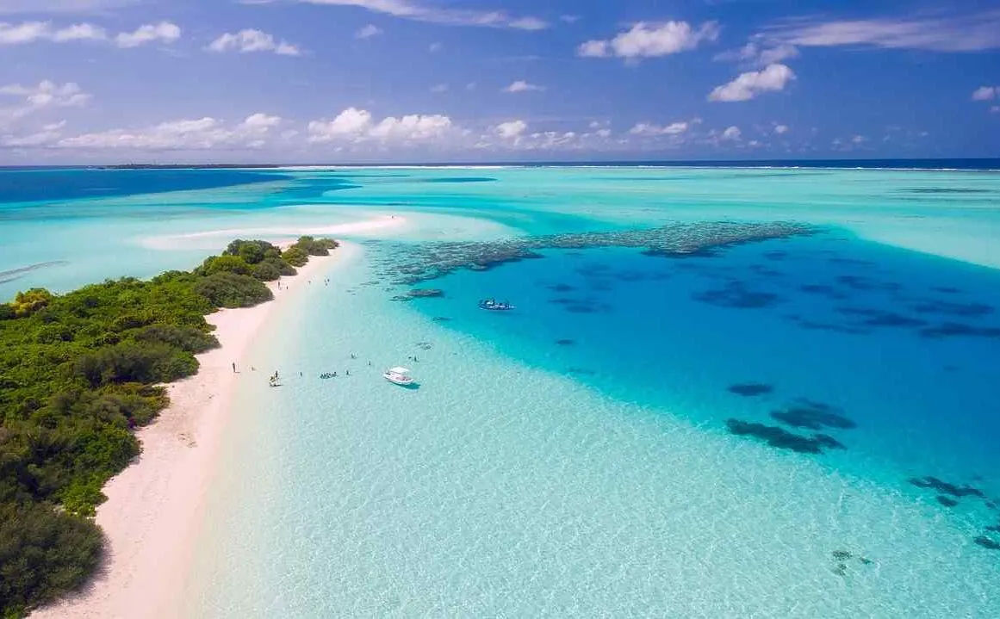

لا شك ان المحيطات هي الجزء الاعظم والاكبر من الغلاف المائي الذي يطوق الكرة الارضية؛وكما هو كمعروف فان المياة تحتل 70.7بالمائة
من مساحةسطح الكرة الارضية تقريبا اي مايعادل 510 مليون كم وهي تتكون من مجموع مساحة المحيطات والبحيرات والبحار بعمق يبلغ
متوسطة 3800م ويبلغ عدد المحيطات التي تطوق الكرة الارضية خمسة محيطات . ونقسم المياة اعتياديا الي عدة محيطات رئيسية
وبحار اصغر ،حيث ماء المحيطات يغطي ما يقرب من 71% من سطح الارض ؛وتحتوي المحيطات علي 97% من مياة الارض وقد صرح العلماء انة لم
.يتم استكشاف سوي 5% فقط من المحيطات ككل علي سطح الارض
.والحجم الاجمالي يصل الي 1,3 مليار كيلو متر مكعب ؛ مع كتوسط عمق 3,682 متراَ
ان اصل محيطات الارض لا يزال غير معروف ،لكن يعتقد العلماء ان المحيطات قد شكلت فترة مناخ حقبة الهاديان بالفعل وربماكانت هي
.لنشوء الحياة
-:المحيطات التي تطوق الكرة الارضيةخمسة هي كالتالي
هو اكبر المحيطات اذ تبلغ مساحتة نصف مساحة الغلاف المائي ؛ وهو اكثر من ثلث مساحة سطح الكرة الارضية وتيلغ مساحتة حوالي 165246 مليون كم
واذا اضفنا له البحار الفرعية التابعة لة كبحر اليابان والصين تصبح مساحتة 179679 مليون كم ؛ويقع بين القارة الامريكية من جهة وقارتي
واستراليا من جهة اخري ويحتوي علي اعمق وحدة بحرية في العالم وهي وحدة ماريان 11521م بالقرب من جزر الفلبين؛ لكن معدل عمقة يصل الي 4282م
.ويتصل بالمحيط الاطلسي عبر مضيق ماجلان بجنوب اميركا الجنوبية وبقناة بنما بامريكا الوسطي
يقع بين قارتي اوروبا وافريقيا من جهة والقارة الاميريكية من جهة ؛ويمتد من القطب الشمالي حتي الانتراكتيك
تبلغ مساحتة 82441 مليون كم وترتفع نحو 106463 كم في حال اضيفت لة البحارالمتفرعة كبحرالمانش وبحر البلطيق وينفتح
.علي المحيط المتجمد الشمالي. اعمق وحدة فية وحدة بورتريكو 9219م اما معدل عمقة فهو 868م
ثالث محيطات العالم من حيث المساحة بعد المحيطين الهادئ والأطلسي إذ تبلغ مساحته نحو 74 مليون كم². فمساحته أقل من نصف مساحة
لمحيط الهادئ. ويطل المحيط الهندي على البحر الأحمر والخـــليج العربي الغني بالنفط، وبحر العرب، وبحر أندمان، وخليج البنغال.
ويمتد المحيط الهندي من إفريقيا غربًا إلى أستراليا وأندونيسيا شرقًا، ومن آسيـــا شمالاًً حـــتى القارة القطبية أنتاركتيكا جنوبًا
ويصل عرض المحيط ما بين أقصى جنوبي إفريقيا وأستراليا، حوالي 9,980كم، ويقل عرضه كلما اتجهنا شمالاً
حيث تقسمه الهند وسريلانكا إلى قسمين، هما بحر العرب وخليج البنغال. ويبلغ معدل عمق المحيط الهندي 3,897 م
ينما تصل أعمق نقاطه المعروفة إلى 7,725 م